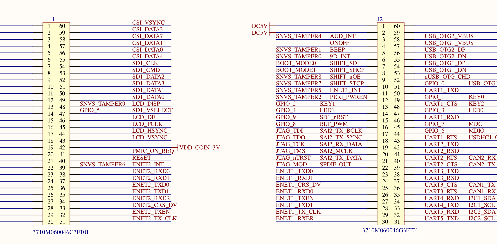

核心板第 8 页：60pin 连接器与整板信号
这是核心板最后一页（IMX6ULL_CORE_PIN.SchDoc），也是「核心板与底板的合同」：J1、J2 两个 60 pin 连接器，共 120 个触点，把 SoC 几乎所有可用信号引出去。读这一页的方法和前面不同——不要逐根看，而要按组归类，再算连接器本身的代价。

新窗口打开读完这一章，你应该能
- 把 120 个触点按功能分成七组，并说出每组的代表信号
- 解释为什么电源与地要占十几个触点，而不是各一个
- 估算连接器 1nH 串联电感在 24 根数据同时翻转时的地弹电压
- 说出热插拔时「地先接触」的物理原因
- 由核心板定义反推底板网络名（IMX1/IMX2 的来历）
3.9.1120 个触点怎么分组
| 组 | 代表信号 | 大约触点数 |
|---|---|---|
| 电源/地 | DC5V、GND、VDD_COIN_3V、USB_OTG1_VBUS、USB_OTG2_VBUS | 15–20 |
| 显示 | LCD_DATA0–23、LCD_DE/PCLK/HSYNC/VSYNC、LCD_DISP | 约 28 |
| 摄像头 | CSI_DATA0–7、CSI_MCLK/PIXCLK/VSYNC/HSYNC、CSI_RESET/PWDN | 约 12 |
| 存储/卡 | SD1_CLK/CMD/DATA0–3、SD1_VSELECT、SD1_nRST、USDHC1_CD_B | 约 8 |
| 网络 | ENET1/2 的 TXD/RXD/TXEN/CRS_DV/TX_CLK、ENET_MDIO/MDC、ENET1/2_INT | 约 16 |
| 串行总线 | UART1–5 的 TX/RX/CTS/RTS、I2C1/2、CAN1/2、ECSPI3/4 | 约 20 |
| 控制/调试 | RESET、ONOFF、BOOT_MODE0/1、JTAG_TCK/TMS/TDI/TDO/nTRST/MOD、SNVS_TAMPER0–9、GPIO_0–9 | 约 25 |
分组的意义：底板设计时按组规划走线。例如 LCD 组要等长、ENET 组要差分、JTAG 组要短而直，这些约束在连接器上就已经「埋好」——同一组的脚通常排在一起（J1 集中 LCD/CSI/SD，J2 集中 GPIO/UART/CAN/ENET/JTAG）。
3.9.2电源与地为什么占十几个脚
DC5V 与 GND 在连接器上各有多个触点并联，原因有三：
- 电流：一个 0.5mm 间距连接器触点额定约 0.5A，底板总电流可能 1–2A，必须并联 4–6 个；
- 接触电阻：单触点约 20–30mΩ，并联后降到 5mΩ，压降与发热都下降；
- 回流路径：每根高速信号都需要「最近的地」作为回流，地脚分散布置才能让回流路径短。
算一下接触电阻的代价：若 5V 供电 1A 只用一个触点（25mΩ），压降 25mV、功耗 25mW；看起来不大，但连接器多次插拔后接触电阻可能升到 100mΩ，压降 100mV、发热 100mW，且压降会让底板 5V 掉到 4.9V，影响 DCDC 输入裕量。这就是「电源脚要并联」的实际理由。
3.9.3连接器的隐形代价：1nH 串联电感
每个触点在电气上近似一个 1nH 的电感（引脚长度约 1mm，约 1nH/mm）。它对低速信号无所谓，但对「多根同时翻转」是灾难：
V地弹 = L × N × (dI/dt)
代入本板 LCD 的最坏情况：24 根数据同时从 0→1，每根驱动电流约 8mA，边沿 1ns：
dI/dt = 24 × 8mA / 1ns = 0.192 A/ns
V = 1nH × 0.192 A/ns = 0.19V
0.19V 的地弹意味着「地」瞬间抬高 0.19V，接收端的判决阈值随之偏移——在 3.3V 系统里占 6%，足以让眼图闭合。解决办法不是「换更好的连接器」，而是：
- 多放地脚，让返回电流分摊到多个 1nH 并联（N 个并联 → L/N）；
- 数据线交错排列（signal-ground-signal），每根信号旁边都有地；
- 降低边沿速率：SoC 的 LCD 接口可配置驱动强度（DSE），从 8mA 档降到 4mA 档，地弹减半。
3.9.4热插拔：为什么地要「先接触」
板对板连接器一般不是为热插拔设计的，但很多人调试时会带电插拔。风险在于：
- 若电源脚先接触、地脚后接触，电流会从信号脚「找地」，把 IO 的 ESD 二极管当回流路径烧掉；
- 若地先接触、电源后接触，电流走正常路径，芯片安全。
所以高质量连接器会把「地脚做得更长」，实现「地先通、后断」。本板是普通板对板连接器，结论就是：不要带电插拔。这也是维修时最常见的「核心板好好的，底板 IO 全烧」的原因。
3.9.5由这页反推底板
核心板把信号命名为「原始名」（LCD_DATA0、CSI_MCLK…），底板则把它们重新组织成 IMX1（A1–A60）与 IMX2（B1–B60）两个符号。于是同一根线有三个名字：
| 核心板 | 底板连接器 | 底板功能网络 |
|---|---|---|
| LCD_DATA0 | IMX1 某脚 | 接 40pin LCD 排座的 LCD_R0 |
| CSI_MCLK | IMX1 某脚 | 经 R32 22Ω 接摄像头 P1 的 CSI_MCLK |
| USDHC1_CLK | IMX1 某脚 | 接 TF 卡的 CLK/SCK |
调试时「按名字搜」比「按脚号搜」可靠：在底板上找 LCD_DATA0 一定能追到核心板，而 A1/B1 这种脚号只在连接器符号里出现。
3.9.6这一页的读图陷阱
- 同一功能出现两次：ENET1_TXD0 与 ENET2_TXD0 都在 J2 上——不是重复，是两路独立 MAC。
- USB_OTG1_VBUS 与 USB_OTG2_VBUS 是「检测输入」，不是供电输出；底板上它们接分压电阻。
- VDD_COIN_3V 只出现在 J1 的一个脚上，是纽扣电池的正极，不要误接 3.3V。
- TP1/TP2 是 CLK1_P/N 的测试点，不是信号源；它们引出来是为了测 SoC 的参考时钟。